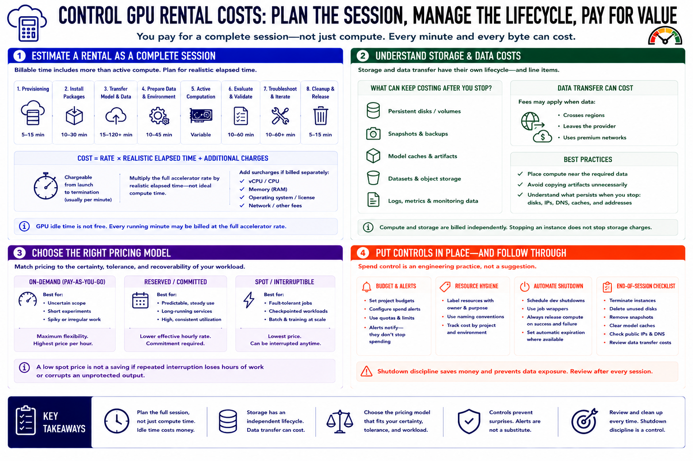

Cost and Budget Control
Connecting to LMS... Progress: in progress

Narration
Estimate a rental as a complete session. Include provisioning, package installation, model transfer, data preparation, active computation, evaluation, troubleshooting, and cleanup. Every running minute may be billed at the full accelerator rate, even when the GPU is idle. Multiply the rate by realistic elapsed time rather than ideal compute time, then include CPU, memory, and operating-system surcharges if the provider prices them separately.
Storage has an independent lifecycle. Persistent disks, snapshots, model caches, datasets, logs, and object storage can remain billable after an instance stops. Data transfer may be charged when files cross regions or leave the provider. Place compute near required data, avoid copying artifacts unnecessarily, and understand whether stopping an instance retains its disks and addresses.
Use on-demand rental for uncertain or short work. Consider reserved capacity only when utilization is predictable enough to justify the commitment. Use interruptible capacity for jobs that save checkpoints, resume safely, and tolerate delayed completion. A low spot price is not a saving if repeated interruption loses hours of work or corrupts an unprotected output.
Set project budgets, spend alerts, quotas, and automatic expiration where available. Label resources with an owner and purpose. Schedule development shutdowns and use job wrappers that release compute after both success and failure. Alerts may notify rather than stop spending, so assign someone to respond. At the end of each session, review compute, storage, snapshots, public addresses, and transfer. Shutdown discipline is an engineering control, not a reminder to be careful.